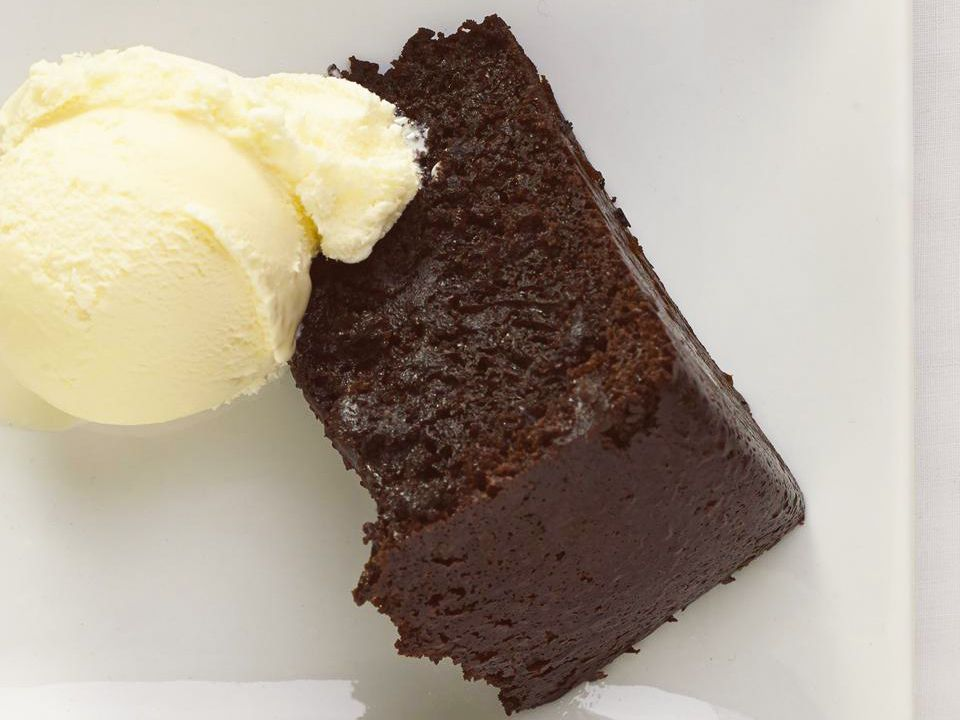

Chocolate Cake

Description
This chocolate crockpot cake is incredibly moist and delicious, and it's so easy to make in your slow cooker. Serve it warm with a scoop of vanilla ice cream.
Make sure to follow all the steps in great detail to get the most amazing chocolate cake ever
Ingredients
- cooking spray
- 2 cups white sugar
- 1 ¾ cups all-purpose flour
- ¾ cup unsweetened cocoa powder
- 1 ½ teaspoons baking soda
- 1 ½ teaspoons baking powder
- 1 teaspoon salt
- 1 cup milk
- ½ cup vegetable oil
- 2 large eggs
- 2 teaspoons vanilla extract
- 1 cup boiling water
Steps
- Spray the crock of a large slow cooker with cooking spray.
- Whisk sugar, flour, cocoa powder, baking soda, baking powder, and salt together in a large bowl.
- Whisk milk, oil, eggs, and vanilla together in a medium bowl until well combined. Slowly whisk in boiling water.
- Add wet ingredients to dry ingredients and mix until well combined; pour batter into the prepared slow cooker.
- Cover and cook on Low until cake has no wet spots on top and is pulling away from the sides of the crock, about 3 hours.
- Turn off slow cooker and let rest for 30 minutes before serving.